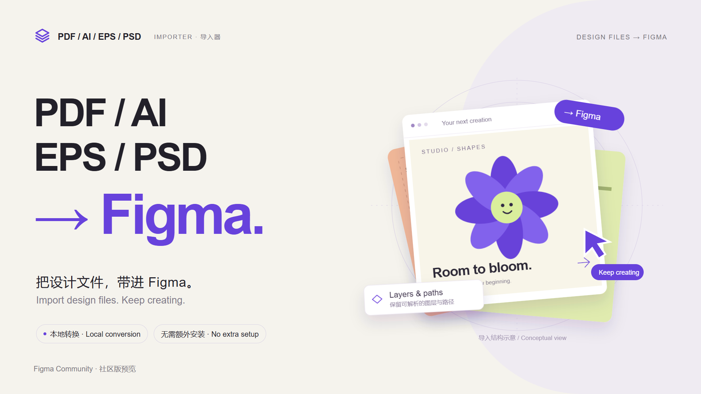
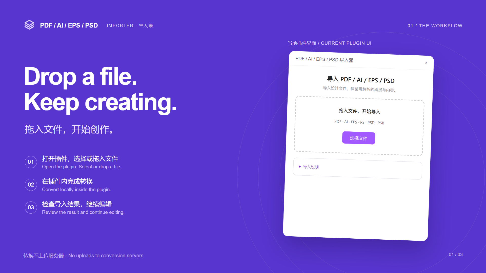
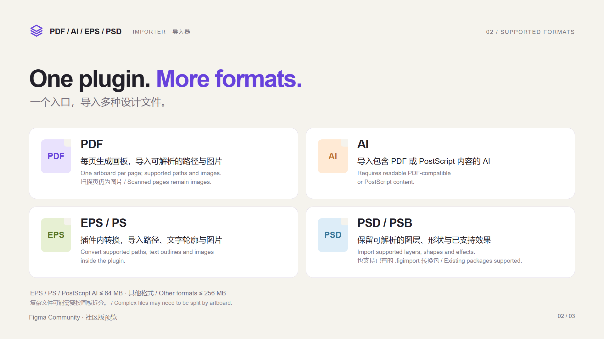
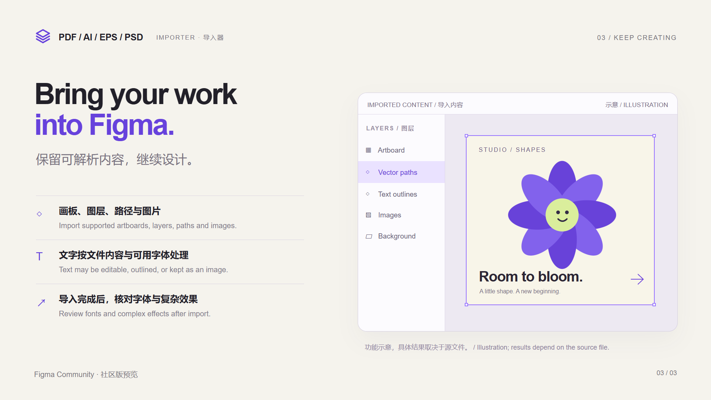

Thumbnail · 社区缩略图
下载 PNG ↗

PDF / AI / EPS / PSD 导入器 · 中英双语 · 1920 × 1080
将 Thumbnail 用作缩略图，将 Gallery 01–03 按顺序上传到 “Upload at least 1 image or video”。
文案基于社区版 2.1.0-preview.6；截图来自现有插件代码，功能插画已标注示意。查看上传说明



